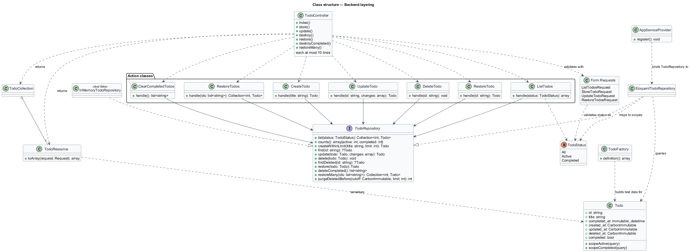

MediatR handlers and Clean Architecture use cases, mapped onto app/Actions/Todos and TodoRepository

final readonly class CreateTodo
{
/** The most non-deleted todos the list may hold (L2-003). */
public const int LIMIT = 500;
public function __construct(private TodoRepository $todos) {}
public function handle(string $title): Todo
{
return $this->todos->createWithinLimit($title, self::LIMIT);
}
}
public record CreateTodoCommand(string Title) : IRequest<Todo>;
public sealed class CreateTodoHandler(ITodoRepository todos)
: IRequestHandler<CreateTodoCommand, Todo>
{
public const int Limit = 500;
public Task<Todo> Handle(CreateTodoCommand c, CancellationToken ct) =>
todos.CreateWithinLimitAsync(c.Title, Limit, ct);
}
// controller: await mediator.Send(new CreateTodoCommand(title));
handle parameters are the commandSend: the controller calls the injected Action directlyEach concern has an explicit home instead: Form Requests validate, the repository owns transactions.
handle, one interface dependency (L2-044)new InMemoryTodoRepository: no database, no mocksit('creates an active todo', function (): void {
$repository = new InMemoryTodoRepository;
$todo = (new CreateTodo($repository))->handle('Buy oat milk');
final readonly class ListTodos
{
public function __construct(private TodoRepository $todos) {}
public function handle(TodoStatus $status): TodoList
{
$counts = $this->todos->counts();
return new TodoList($this->todos->list($status), $counts['active'], $counts['completed']);
}
}
final readonly class TodoList
{
/**
* @param Collection<int, Todo> $todos
*/
public function __construct(
public Collection $todos,
public int $active,
public int $completed,
) {}
}
A positional record as a query result. Counts ignore the filter because the contract's meta does.
public function handle(string $id, array $changes): Todo
{
$todo = $this->todos->find($id) ?? throw new TodoNotFound($id);
$columns = [];
if (array_key_exists('title', $changes)) {
$columns['title'] = $changes['title'];
}
// Always written when requested, so a concurrent request cannot leave this
// one half-applied (L2-043); `??` keeps an existing completedAt (L2-009).
if (array_key_exists('completed', $changes)) {
$columns['completed_at'] = $changes['completed'] ? ($todo->completed_at ?? now()) : null;
}
return $this->todos->update($todo, $columns);
}
TodoNotFound?? keeps an existing completed_at: completing twice is idempotent (L2-009 criterion 3)public function handle(string $id): void
{
$this->todos->delete($this->todos->find($id) ?? throw new TodoNotFound($id));
}
public function handle(string $id): Todo
{
return $this->todos->restore($this->todos->findDeleted($id) ?? throw new TodoNotFound($id));
}
find sees live rows; findDeleted sees trashed rows. Same id, opposite answers./**
* Soft-deletes every completed todo in one transaction (L2-017, L2-043).
*
* @return list<string> the ids deleted, so the client can undo
*/
public function handle(): array
{
return $this->todos->deleteCompleted();
}
/**
* Restores the soft-deleted todos among `$ids` in one transaction; others are ignored.
*
* @param list<string> $ids
* @return Collection<int, Todo>
*/
public function handle(array $ids): Collection
{
return $this->todos->restoreMany($ids);
}
Each delegates to one repository method, because each needs a transaction the Action must not know about.
Todo query buildernullIf a pull request adds any of these, the layering is broken, and the unit tests with the fake are the first thing to fail.
interface TodoRepository
{
/**
* Non-deleted todos matching the status, newest first, ties broken by id descending.
*
* @return Collection<int, Todo>
*/
public function list(TodoStatus $status): Collection;
/**
* Counts of all non-deleted todos.
*
* @return array{active: int, completed: int}
*/
public function counts(): array;
/**
* Creates a todo unless `$limit` non-deleted todos already exist. The check and the
* insert are atomic, so concurrent creates cannot exceed the limit (L2-043).
*
* @throws TodoLimitReached
*/
public function createWithinLimit(string $title, int $limit): Todo;
/** The non-deleted todo with this id, if any. */
public function find(string $id): ?Todo;
// ... update, delete, findDeleted, restore, deleteCompleted, restoreMany, purgeDeletedBefore
No generic GetAll/Save. createWithinLimit, deleteCompleted, purgeDeletedBefore: one method per need, so the fake stays small and honest.
No unit-of-work behaviour in a pipeline. The repository method opens the transaction; the in-memory fake simply does not need one.
Active Record: the model is entity and mapper. A choice, not an accident. The model carries only a completed accessor and two scopes; Actions treat it as data.
/** No non-deleted todo has the given id (L2-014). */
final class TodoNotFound extends RuntimeException
{
public function __construct(public readonly string $id)
{
parent::__construct("No todo with id {$id}.");
}
}
/** Creating another todo would exceed the cap on non-deleted todos (L2-003). */
final class TodoLimitReached extends RuntimeException
{
public function __construct(public readonly int $limit)
{
parent::__construct("You have {$limit} tasks. Finish or delete some to add more.");
}
}
ProblemDetailsRenderer: 404 and 422 (video 08)Result type is not idiomatic here; exceptions plus one renderer keep signatures cleanpublic array $bindings = [
TodoRepository::class => EloquentTodoRepository::class,
];
/** A database-free TodoRepository for unit tests of the Actions (L2-044 criterion 3). */
final class InMemoryTodoRepository implements TodoRepository
{
/** @var array<string, Todo> */
private array $rows = [];
Unit tests pass new InMemoryTodoRepository into the constructor. No container, no mocking library.
app/Actions/TodosTodoStatus caseTodomatchListTodos, ListTodosRequest, and the controller do not change.
Todo model or a query builder instead of the interfaceTodoList belongsTodoNotFound to return null: hides the 404 from the rendererDB::transaction in an Action: couples it to the database and breaks the in-memory testshandle, one interface; parameters are the commandAn EF Core entity, its configuration and its migrations, mapped onto Todo, create_todos_table and TodoFactory.